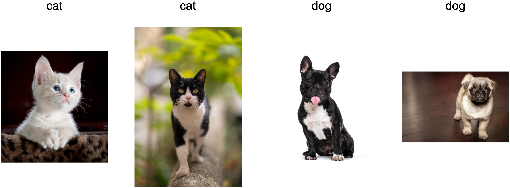

Environment and Distribution Shift⚓︎
:label:sec_environment-and-distribution-shift
In the previous sections, we worked through a number of hands-on applications of machine learning, fitting models to a variety of datasets. And yet, we never stopped to contemplate either where data came from in the first place or what we ultimately plan to do with the outputs from our models. Too often, machine learning developers in possession of data rush to develop models without pausing to consider these fundamental issues.
Many failed machine learning deployments can be traced back to this failure. Sometimes models appear to perform marvelously as measured by test set accuracy but fail catastrophically in deployment when the distribution of data suddenly shifts. More insidiously, sometimes the very deployment of a model can be the catalyst that perturbs the data distribution. Say, for example, that we trained a model to predict who will repay rather than default on a loan, finding that an applicant's choice of footwear was associated with the risk of default (Oxfords indicate repayment, sneakers indicate default). We might be inclined thereafter to grant a loan to any applicant wearing Oxfords and to deny all applicants wearing sneakers.
In this case, our ill-considered leap from pattern recognition to decision-making and our failure to critically consider the environment might have disastrous consequences. For starters, as soon as we began making decisions based on footwear, customers would catch on and change their behavior. Before long, all applicants would be wearing Oxfords, without any coincident improvement in credit-worthiness. Take a minute to digest this because similar issues abound in many applications of machine learning: by introducing our model-based decisions to the environment, we might break the model.
While we cannot possibly give these topics a complete treatment in one section, we aim here to expose some common concerns, and to stimulate the critical thinking required to detect such situations early, mitigate damage, and use machine learning responsibly. Some of the solutions are simple (ask for the "right" data), some are technically difficult (implement a reinforcement learning system), and others require that we step outside the realm of statistical prediction altogether and grapple with difficult philosophical questions concerning the ethical application of algorithms.
Types of Distribution Shift⚓︎
To begin, we stick with the passive prediction setting considering the various ways that data distributions might shift and what might be done to salvage model performance. In one classic setup, we assume that our training data was sampled from some distribution \(p_S(\mathbf{x},y)\) but that our test data will consist of unlabeled examples drawn from some different distribution \(p_T(\mathbf{x},y)\). Already, we must confront a sobering reality. Absent any assumptions on how \(p_S\) and \(p_T\) relate to each other, learning a robust classifier is impossible.
Consider a binary classification problem, where we wish to distinguish between dogs and cats. If the distribution can shift in arbitrary ways, then our setup permits the pathological case in which the distribution over inputs remains constant: \(p_S(\mathbf{x}) = p_T(\mathbf{x})\), but the labels are all flipped: \(p_S(y \mid \mathbf{x}) = 1 - p_T(y \mid \mathbf{x})\). In other words, if God can suddenly decide that in the future all "cats" are now dogs and what we previously called "dogs" are now cats---without any change in the distribution of inputs \(p(\mathbf{x})\), then we cannot possibly distinguish this setting from one in which the distribution did not change at all.
Fortunately, under some restricted assumptions on the ways our data might change in the future, principled algorithms can detect shift and sometimes even adapt on the fly, improving on the accuracy of the original classifier.
Covariate Shift⚓︎
Among categories of distribution shift, covariate shift may be the most widely studied. Here, we assume that while the distribution of inputs may change over time, the labeling function, i.e., the conditional distribution \(P(y \mid \mathbf{x})\) does not change. Statisticians call this covariate shift because the problem arises due to a shift in the distribution of the covariates (features). While we can sometimes reason about distribution shift without invoking causality, we note that covariate shift is the natural assumption to invoke in settings where we believe that \(\mathbf{x}\) causes \(y\).
Consider the challenge of distinguishing cats and dogs.
Our training data might consist of images of the kind in :numref:fig_cat-dog-train.

:label:fig_cat-dog-train
At test time we are asked to classify the images in :numref:fig_cat-dog-test.
 :label:
:label:fig_cat-dog-test
The training set consists of photos, while the test set contains only cartoons. Training on a dataset with substantially different characteristics from the test set can spell trouble absent a coherent plan for how to adapt to the new domain.
Label Shift⚓︎
Label shift describes the converse problem. Here, we assume that the label marginal \(P(y)\) can change but the class-conditional distribution \(P(\mathbf{x} \mid y)\) remains fixed across domains. Label shift is a reasonable assumption to make when we believe that \(y\) causes \(\mathbf{x}\). For example, we may want to predict diagnoses given their symptoms (or other manifestations), even as the relative prevalence of diagnoses are changing over time. Label shift is the appropriate assumption here because diseases cause symptoms. In some degenerate cases the label shift and covariate shift assumptions can hold simultaneously. For example, when the label is deterministic, the covariate shift assumption will be satisfied, even when \(y\) causes \(\mathbf{x}\). Interestingly, in these cases, it is often advantageous to work with methods that flow from the label shift assumption. That is because these methods tend to involve manipulating objects that look like labels (often low-dimensional), as opposed to objects that look like inputs, which tend to be high-dimensional in deep learning.
Concept Shift⚓︎
We may also encounter the related problem of concept shift,
which arises when the very definitions of labels can change.
This sounds weird---a cat is a cat, no?
However, other categories are subject to changes in usage over time.
Diagnostic criteria for mental illness,
what passes for fashionable, and job titles,
are all subject to considerable
amounts of concept shift.
It turns out that if we navigate around the United States,
shifting the source of our data by geography,
we will find considerable concept shift regarding
the distribution of names for soft drinks
as shown in :numref:fig_popvssoda.
 :width:
:width:400px
:label:fig_popvssoda
If we were to build a machine translation system, the distribution \(P(y \mid \mathbf{x})\) might be different depending on our location. This problem can be tricky to spot. We might hope to exploit knowledge that shift only takes place gradually either in a temporal or geographic sense.
Examples of Distribution Shift⚓︎
Before delving into formalism and algorithms, we can discuss some concrete situations where covariate or concept shift might not be obvious.
Medical Diagnostics⚓︎
Imagine that you want to design an algorithm to detect cancer. You collect data from healthy and sick people and you train your algorithm. It works fine, giving you high accuracy and you conclude that you are ready for a successful career in medical diagnostics. Not so fast.
The distributions that gave rise to the training data and those you will encounter in the wild might differ considerably. This happened to an unfortunate startup that some of we authors worked with years ago. They were developing a blood test for a disease that predominantly affects older men and hoped to study it using blood samples that they had collected from patients. However, it is considerably more difficult to obtain blood samples from healthy men than from sick patients already in the system. To compensate, the startup solicited blood donations from students on a university campus to serve as healthy controls in developing their test. Then they asked whether we could help them to build a classifier for detecting the disease.
As we explained to them, it would indeed be easy to distinguish between the healthy and sick cohorts with near-perfect accuracy. However, that is because the test subjects differed in age, hormone levels, physical activity, diet, alcohol consumption, and many more factors unrelated to the disease. This was unlikely to be the case with real patients. Due to their sampling procedure, we could expect to encounter extreme covariate shift. Moreover, this case was unlikely to be correctable via conventional methods. In short, they wasted a significant sum of money.
Self-Driving Cars⚓︎
Say a company wanted to leverage machine learning for developing self-driving cars. One key component here is a roadside detector. Since real annotated data is expensive to get, they had the (smart and questionable) idea to use synthetic data from a game rendering engine as additional training data. This worked really well on "test data" drawn from the rendering engine. Alas, inside a real car it was a disaster. As it turned out, the roadside had been rendered with a very simplistic texture. More importantly, all the roadside had been rendered with the same texture and the roadside detector learned about this "feature" very quickly.
A similar thing happened to the US Army when they first tried to detect tanks in the forest. They took aerial photographs of the forest without tanks, then drove the tanks into the forest and took another set of pictures. The classifier appeared to work perfectly. Unfortunately, it had merely learned how to distinguish trees with shadows from trees without shadows---the first set of pictures was taken in the early morning, the second set at noon.
Nonstationary Distributions⚓︎
A much more subtle situation arises when the distribution changes slowly (also known as nonstationary distribution) and the model is not updated adequately. Below are some typical cases.
- We train a computational advertising model and then fail to update it frequently (e.g., we forget to incorporate that an obscure new device called an iPad was just launched).
- We build a spam filter. It works well at detecting all spam that we have seen so far. But then the spammers wise up and craft new messages that look unlike anything we have seen before.
- We build a product recommendation system. It works throughout the winter but then continues to recommend Santa hats long after Christmas.
More Anecdotes⚓︎
- We build a face detector. It works well on all benchmarks. Unfortunately it fails on test data---the offending examples are close-ups where the face fills the entire image (no such data was in the training set).
- We build a web search engine for the US market and want to deploy it in the UK.
- We train an image classifier by compiling a large dataset where each among a large set of classes is equally represented in the dataset, say 1000 categories, represented by 1000 images each. Then we deploy the system in the real world, where the actual label distribution of photographs is decidedly non-uniform.
Correction of Distribution Shift⚓︎
As we have discussed, there are many cases where training and test distributions \(P(\mathbf{x}, y)\) are different. In some cases, we get lucky and the models work despite covariate, label, or concept shift. In other cases, we can do better by employing principled strategies to cope with the shift. The remainder of this section grows considerably more technical. The impatient reader could continue on to the next section as this material is not prerequisite to subsequent concepts.
Empirical Risk and Risk⚓︎
:label:subsec_empirical-risk-and-risk
Let's first reflect on what exactly is happening during model training: we iterate over features and associated labels of training data \(\{(\mathbf{x}_1, y_1), \ldots, (\mathbf{x}_n, y_n)\}\) and update the parameters of a model \(f\) after every minibatch. For simplicity we do not consider regularization, so we largely minimize the loss on the training:
\(\(\mathop{\mathrm{minimize}}_f \frac{1}{n} \sum_{i=1}^n l(f(\mathbf{x}_i), y_i),\)\)
:eqlabel:eq_empirical-risk-min
where \(l\) is the loss function
measuring "how bad" the prediction \(f(\mathbf{x}_i)\) is given the associated label \(y_i\).
Statisticians call the term in :eqref:eq_empirical-risk-min empirical risk.
The empirical risk is an average loss over the training data
for approximating the risk,
which is the
expectation of the loss over the entire population of data drawn from their true distribution
\(p(\mathbf{x},y)\):
\(\(E_{p(\mathbf{x}, y)} [l(f(\mathbf{x}), y)] = \int\int l(f(\mathbf{x}), y) p(\mathbf{x}, y) \;d\mathbf{x}dy.\)\)
:eqlabel:eq_true-risk
However, in practice we typically cannot obtain the entire population of data.
Thus, empirical risk minimization,
which is minimizing the empirical risk in :eqref:eq_empirical-risk-min,
is a practical strategy for machine learning,
with the hope of approximately
minimizing the risk.
Covariate Shift Correction⚓︎
:label:subsec_covariate-shift-correction
Assume that we want to estimate some dependency \(P(y \mid \mathbf{x})\) for which we have labeled data \((\mathbf{x}_i, y_i)\). Unfortunately, the observations \(\mathbf{x}_i\) are drawn from some source distribution \(q(\mathbf{x})\) rather than the target distribution \(p(\mathbf{x})\). Fortunately, the dependency assumption means that the conditional distribution does not change: \(p(y \mid \mathbf{x}) = q(y \mid \mathbf{x})\). If the source distribution \(q(\mathbf{x})\) is "wrong", we can correct for that by using the following simple identity in the risk:
In other words, we need to reweigh each data example by the ratio of the probability that it would have been drawn from the correct distribution to that from the wrong one:
Plugging in the weight \(\beta_i\) for each data example \((\mathbf{x}_i, y_i)\) we can train our model using weighted empirical risk minimization:
\(\(\mathop{\mathrm{minimize}}_f \frac{1}{n} \sum_{i=1}^n \beta_i l(f(\mathbf{x}_i), y_i).\)\)
:eqlabel:eq_weighted-empirical-risk-min
Alas, we do not know that ratio, so before we can do anything useful we need to estimate it. Many methods are available, including some fancy operator-theoretic approaches that attempt to recalibrate the expectation operator directly using a minimum-norm or a maximum entropy principle. Note that for any such approach, we need samples drawn from both distributions---the "true" \(p\), e.g., by access to test data, and the one used for generating the training set \(q\) (the latter is trivially available). Note however, that we only need features \(\mathbf{x} \sim p(\mathbf{x})\); we do not need to access labels \(y \sim p(y)\).
In this case, there exists a very effective approach
that will give almost as good results as the original: namely, logistic regression,
which is a special case of softmax regression (see :numref:sec_softmax)
for binary classification.
This is all that is needed to compute estimated probability ratios.
We learn a classifier to distinguish
between data drawn from \(p(\mathbf{x})\)
and data drawn from \(q(\mathbf{x})\).
If it is impossible to distinguish
between the two distributions
then it means that the associated instances
are equally likely to come from
either one of those two distributions.
On the other hand, any instances
that can be well discriminated
should be significantly overweighted
or underweighted accordingly.
For simplicity's sake assume that we have an equal number of instances from both distributions \(p(\mathbf{x})\) and \(q(\mathbf{x})\), respectively. Now denote by \(z\) labels that are \(1\) for data drawn from \(p\) and \(-1\) for data drawn from \(q\). Then the probability in a mixed dataset is given by
Thus, if we use a logistic regression approach, where \(P(z=1 \mid \mathbf{x})=\frac{1}{1+\exp(-h(\mathbf{x}))}\) (\(h\) is a parametrized function), it follows that
As a result, we need to solve two problems:
the first, to distinguish between
data drawn from both distributions,
and then a weighted empirical risk minimization problem
in :eqref:eq_weighted-empirical-risk-min
where we weigh terms by \(\beta_i\).
Now we are ready to describe a correction algorithm. Suppose that we have a training set \(\{(\mathbf{x}_1, y_1), \ldots, (\mathbf{x}_n, y_n)\}\) and an unlabeled test set \(\{\mathbf{u}_1, \ldots, \mathbf{u}_m\}\). For covariate shift, we assume that \(\mathbf{x}_i\) for all \(1 \leq i \leq n\) are drawn from some source distribution and \(\mathbf{u}_i\) for all \(1 \leq i \leq m\) are drawn from the target distribution. Here is a prototypical algorithm for correcting covariate shift:
- Create a binary-classification training set: \(\{(\mathbf{x}_1, -1), \ldots, (\mathbf{x}_n, -1), (\mathbf{u}_1, 1), \ldots, (\mathbf{u}_m, 1)\}\).
- Train a binary classifier using logistic regression to get the function \(h\).
- Weigh training data using \(\beta_i = \exp(h(\mathbf{x}_i))\) or better \(\beta_i = \min(\exp(h(\mathbf{x}_i)), c)\) for some constant \(c\).
- Use weights \(\beta_i\) for training on \(\{(\mathbf{x}_1, y_1), \ldots, (\mathbf{x}_n, y_n)\}\) in :eqref:
eq_weighted-empirical-risk-min.
Note that the above algorithm relies on a crucial assumption. For this scheme to work, we need that each data example in the target (e.g., test time) distribution had nonzero probability of occurring at training time. If we find a point where \(p(\mathbf{x}) > 0\) but \(q(\mathbf{x}) = 0\), then the corresponding importance weight should be infinity.
Label Shift Correction⚓︎
Assume that we are dealing with a
classification task with \(k\) categories.
Using the same notation in :numref:subsec_covariate-shift-correction,
\(q\) and \(p\) are the source distribution (e.g., training time) and target distribution (e.g., test time), respectively.
Assume that the distribution of labels shifts over time:
\(q(y) \neq p(y)\), but the class-conditional distribution
stays the same: \(q(\mathbf{x} \mid y)=p(\mathbf{x} \mid y)\).
If the source distribution \(q(y)\) is "wrong",
we can correct for that
according to
the following identity in the risk
as defined in
:eqref:eq_true-risk:
Here, our importance weights will correspond to the label likelihood ratios:
One nice thing about label shift is that if we have a reasonably good model on the source distribution, then we can get consistent estimates of these weights without ever having to deal with the ambient dimension. In deep learning, the inputs tend to be high-dimensional objects like images, while the labels are often simpler objects like categories.
To estimate the target label distribution, we first take our reasonably good off-the-shelf classifier (typically trained on the training data) and compute its "confusion" matrix using the validation set (also from the training distribution). The confusion matrix, \(\mathbf{C}\), is simply a \(k \times k\) matrix, where each column corresponds to the label category (ground truth) and each row corresponds to our model's predicted category. Each cell's value \(c_{ij}\) is the fraction of total predictions on the validation set where the true label was \(j\) and our model predicted \(i\).
Now, we cannot calculate the confusion matrix on the target data directly because we do not get to see the labels for the examples that we see in the wild, unless we invest in a complex real-time annotation pipeline. What we can do, however, is average all of our model's predictions at test time together, yielding the mean model outputs \(\mu(\hat{\mathbf{y}}) \in \mathbb{R}^k\), where the \(i^\textrm{th}\) element \(\mu(\hat{y}_i)\) is the fraction of the total predictions on the test set where our model predicted \(i\).
It turns out that under some mild conditions---if our classifier was reasonably accurate in the first place, and if the target data contains only categories that we have seen before, and if the label shift assumption holds in the first place (the strongest assumption here)---we can estimate the test set label distribution by solving a simple linear system
because as an estimate \(\sum_{j=1}^k c_{ij} p(y_j) = \mu(\hat{y}_i)\) holds for all \(1 \leq i \leq k\), where \(p(y_j)\) is the \(j^\textrm{th}\) element of the \(k\)-dimensional label distribution vector \(p(\mathbf{y})\). If our classifier is sufficiently accurate to begin with, then the confusion matrix \(\mathbf{C}\) will be invertible, and we get a solution \(p(\mathbf{y}) = \mathbf{C}^{-1} \mu(\hat{\mathbf{y}})\).
Because we observe the labels on the source data,
it is easy to estimate the distribution \(q(y)\).
Then, for any training example \(i\) with label \(y_i\),
we can take the ratio of our estimated \(p(y_i)/q(y_i)\)
to calculate the weight \(\beta_i\),
and plug this into weighted empirical risk minimization
in :eqref:eq_weighted-empirical-risk-min.
Concept Shift Correction⚓︎
Concept shift is much harder to fix in a principled manner. For instance, in a situation where suddenly the problem changes from distinguishing cats from dogs to one of distinguishing white from black animals, it will be unreasonable to assume that we can do much better than just collecting new labels and training from scratch. Fortunately, in practice, such extreme shifts are rare. Instead, what usually happens is that the task keeps on changing slowly. To make things more concrete, here are some examples:
- In computational advertising, new products are launched, old products become less popular. This means that the distribution over ads and their popularity changes gradually and any click-through rate predictor needs to change gradually with it.
- Traffic camera lenses degrade gradually due to environmental wear, affecting image quality progressively.
- News content changes gradually (i.e., most of the news remains unchanged but new stories appear).
In such cases, we can use the same approach that we used for training networks to make them adapt to the change in the data. In other words, we use the existing network weights and simply perform a few update steps with the new data rather than training from scratch.
A Taxonomy of Learning Problems⚓︎
Armed with knowledge about how to deal with changes in distributions, we can now consider some other aspects of machine learning problem formulation.
Batch Learning⚓︎
In batch learning, we have access to training features and labels \(\{(\mathbf{x}_1, y_1), \ldots, (\mathbf{x}_n, y_n)\}\), which we use to train a model \(f(\mathbf{x})\). Later on, we deploy this model to score new data \((\mathbf{x}, y)\) drawn from the same distribution. This is the default assumption for any of the problems that we discuss here. For instance, we might train a cat detector based on lots of pictures of cats and dogs. Once we have trained it, we ship it as part of a smart catdoor computer vision system that lets only cats in. This is then installed in a customer's home and is never updated again (barring extreme circumstances).
Online Learning⚓︎
Now imagine that the data \((\mathbf{x}_i, y_i)\) arrives one sample at a time. More specifically, assume that we first observe \(\mathbf{x}_i\), then we need to come up with an estimate \(f(\mathbf{x}_i)\). Only once we have done this do we observe \(y_i\) and so receive a reward or incur a loss, given our decision. Many real problems fall into this category. For example, we need to predict tomorrow's stock price, which allows us to trade based on that estimate and at the end of the day we find out whether our estimate made us a profit. In other words, in online learning, we have the following cycle where we are continuously improving our model given new observations:
Bandits⚓︎
Bandits are a special case of the problem above. While in most learning problems we have a continuously parametrized function \(f\) where we want to learn its parameters (e.g., a deep network), in a bandit problem we only have a finite number of arms that we can pull, i.e., a finite number of actions that we can take. It is not very surprising that for this simpler problem stronger theoretical guarantees in terms of optimality can be obtained. We list it mainly since this problem is often (confusingly) treated as if it were a distinct learning setting.
Control⚓︎
In many cases the environment remembers what we did. Not necessarily in an adversarial manner but it will just remember and the response will depend on what happened before. For instance, a coffee boiler controller will observe different temperatures depending on whether it was heating the boiler previously. PID (proportional-integral-derivative) controller algorithms are a popular choice there.
Likewise, a user's behavior on a news site will depend on what we showed them previously (e.g., they will read most news only once). Many such algorithms form a model of the environment in which they act so as to make their decisions appear less random.
Recently,
control theory (e.g., PID variants) has also been used
to automatically tune hyperparameters
to achieve better disentangling and reconstruction quality,
and improve the diversity of generated text and the reconstruction quality of generated images :cite:Shao.Yao.Sun.ea.2020.
Reinforcement Learning⚓︎
In the more general case of an environment with memory, we may encounter situations where the environment is trying to cooperate with us (cooperative games, in particular for non-zero-sum games), or others where the environment will try to win. Chess, Go, Backgammon, or StarCraft are some of the cases in reinforcement learning. Likewise, we might want to build a good controller for autonomous cars. Other cars are likely to respond to the autonomous car's driving style in nontrivial ways, e.g., trying to avoid it, trying to cause an accident, or trying to cooperate with it.
Considering the Environment⚓︎
One key distinction between the different situations above is that a strategy that might have worked throughout in the case of a stationary environment, might not work throughout in an environment that can adapt. For instance, an arbitrage opportunity discovered by a trader is likely to disappear once it is exploited. The speed and manner at which the environment changes determines to a large extent the type of algorithms that we can bring to bear. For instance, if we know that things may only change slowly, we can force any estimate to change only slowly, too. If we know that the environment might change instantaneously, but only very infrequently, we can make allowances for that. These types of knowledge are crucial for the aspiring data scientist in dealing with concept shift, i.e., when the problem that is being solved can change over time.
Fairness, Accountability, and Transparency in Machine Learning⚓︎
Finally, it is important to remember that when you deploy machine learning systems you are not merely optimizing a predictive model---you are typically providing a tool that will be used to (partially or fully) automate decisions. These technical systems can impact the lives of individuals who are subject to the resulting decisions. The leap from considering predictions to making decisions raises not only new technical questions, but also a slew of ethical questions that must be carefully considered. If we are deploying a medical diagnostic system, we need to know for which populations it may work and for which it may not. Overlooking foreseeable risks to the welfare of a subpopulation could cause us to administer inferior care. Moreover, once we contemplate decision-making systems, we must step back and reconsider how we evaluate our technology. Among other consequences of this change of scope, we will find that accuracy is seldom the right measure. For instance, when translating predictions into actions, we will often want to take into account the potential cost sensitivity of erring in various ways. If one way of misclassifying an image could be perceived as a racial sleight of hand, while misclassification to a different category would be harmless, then we might want to adjust our thresholds accordingly, accounting for societal values in designing the decision-making protocol. We also want to be careful about how prediction systems can lead to feedback loops. For example, consider predictive policing systems, which allocate patrol officers to areas with high forecasted crime. It is easy to see how a worrying pattern can emerge:
- Neighborhoods with more crime get more patrols.
- Consequently, more crimes are discovered in these neighborhoods, entering the training data available for future iterations.
- Exposed to more positives, the model predicts yet more crime in these neighborhoods.
- In the next iteration, the updated model targets the same neighborhood even more heavily leading to yet more crimes discovered, etc.
Often, the various mechanisms by which a model's predictions become coupled to its training data are unaccounted for in the modeling process. This can lead to what researchers call runaway feedback loops. Additionally, we want to be careful about whether we are addressing the right problem in the first place. Predictive algorithms now play an outsize role in mediating the dissemination of information. Should the news that an individual encounters be determined by the set of Facebook pages they have Liked? These are just a few among the many pressing ethical dilemmas that you might encounter in a career in machine learning.
Summary⚓︎
In many cases training and test sets do not come from the same distribution. This is called distribution shift. The risk is the expectation of the loss over the entire population of data drawn from their true distribution. However, this entire population is usually unavailable. Empirical risk is an average loss over the training data to approximate the risk. In practice, we perform empirical risk minimization.
Under the corresponding assumptions, covariate and label shift can be detected and corrected for at test time. Failure to account for this bias can become problematic at test time. In some cases, the environment may remember automated actions and respond in surprising ways. We must account for this possibility when building models and continue to monitor live systems, open to the possibility that our models and the environment will become entangled in unanticipated ways.
Exercises⚓︎
- What could happen when we change the behavior of a search engine? What might the users do? What about the advertisers?
- Implement a covariate shift detector. Hint: build a classifier.
- Implement a covariate shift corrector.
- Besides distribution shift, what else could affect how the empirical risk approximates the risk?
创建日期: November 25, 2023